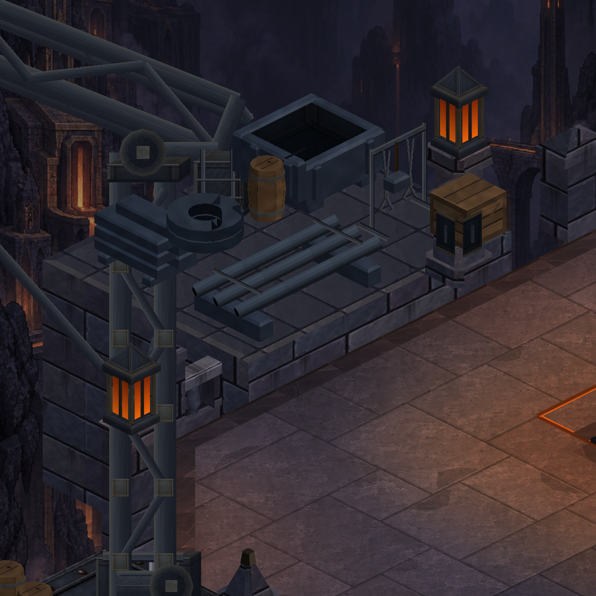
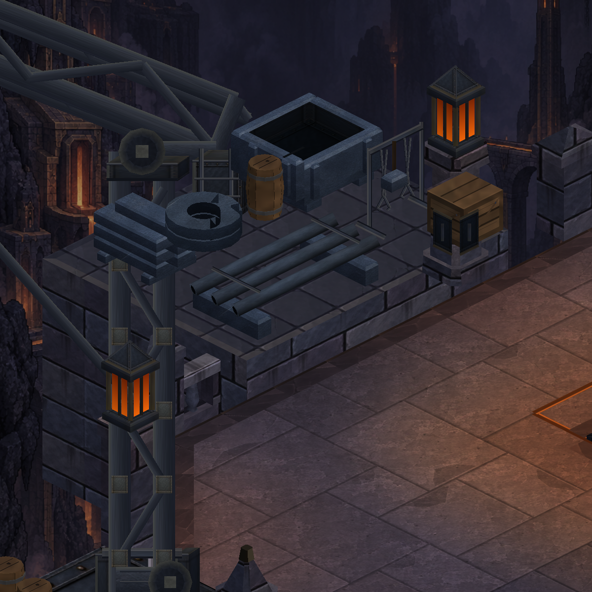
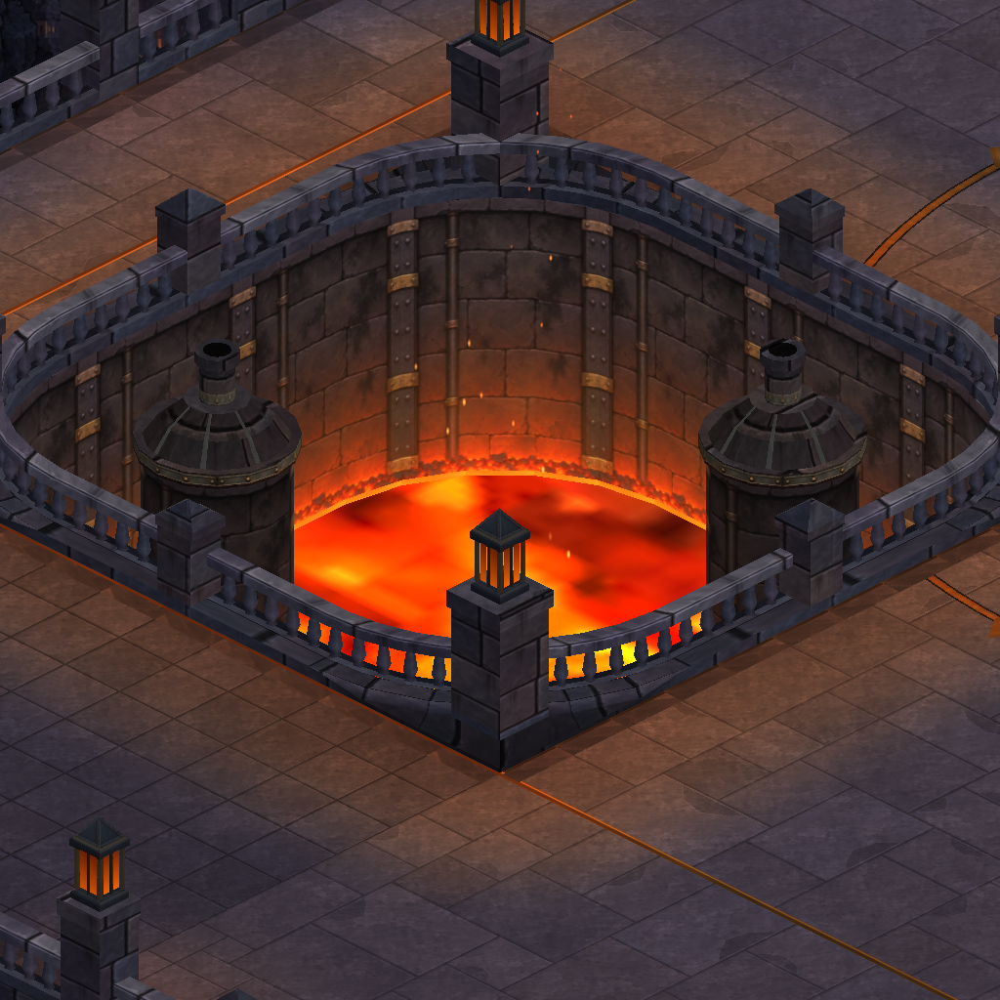
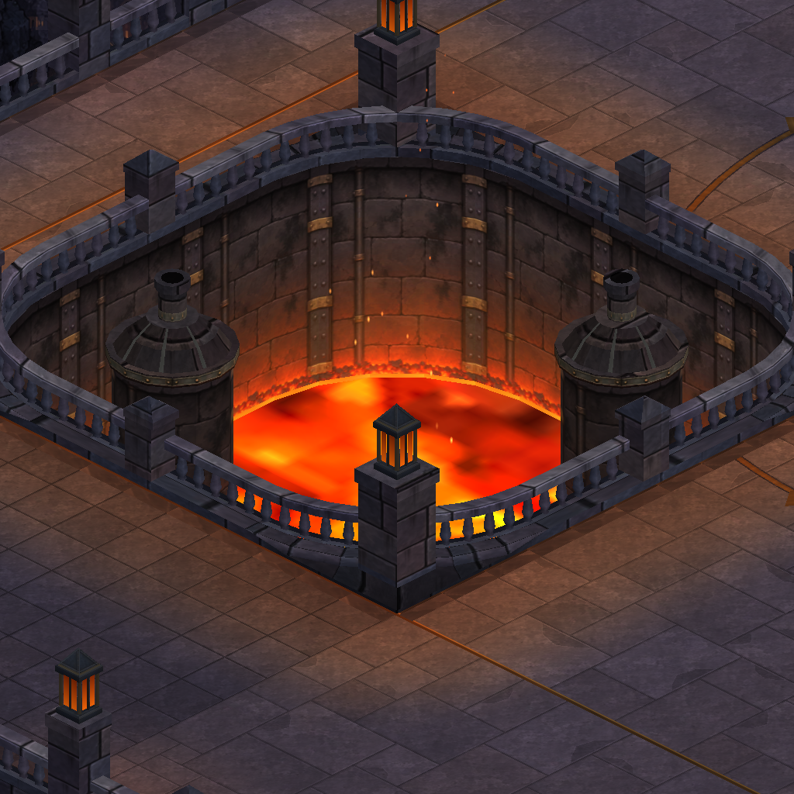
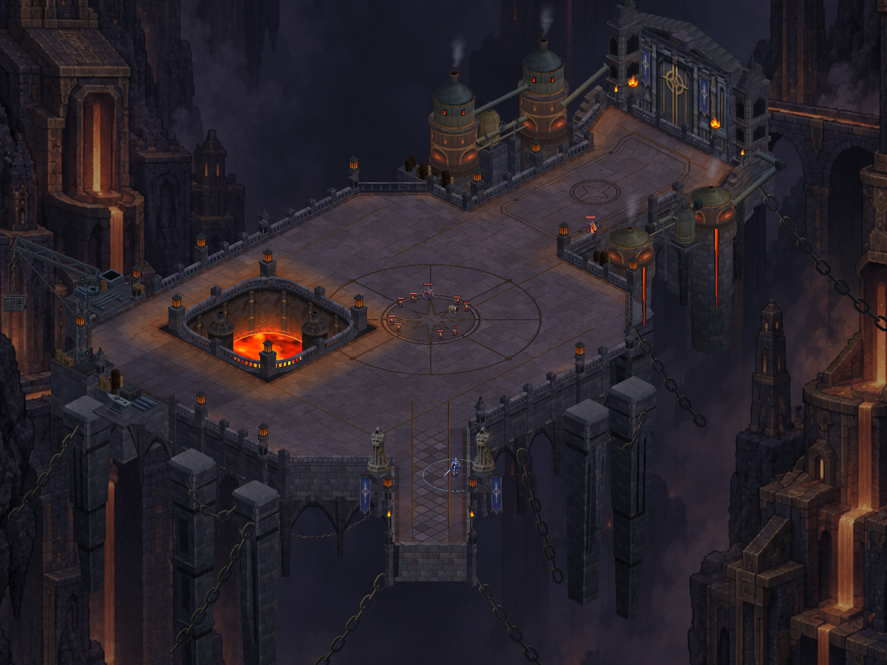
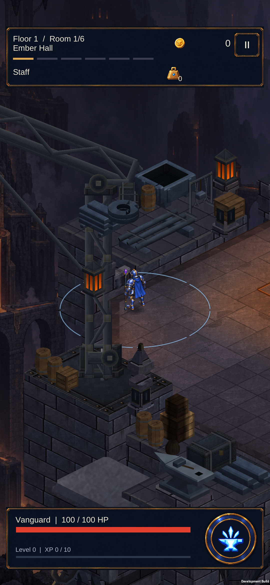
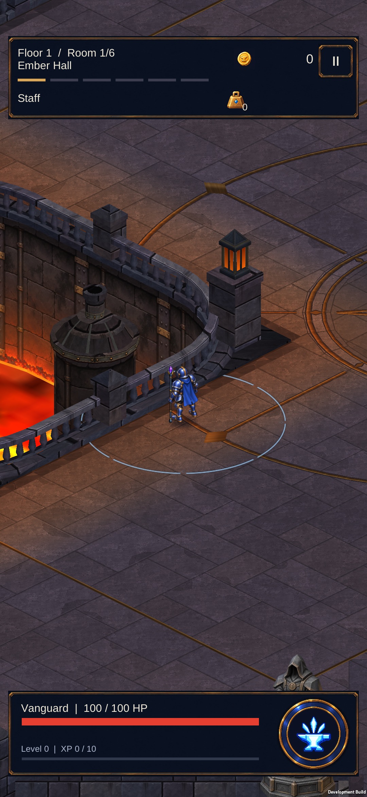
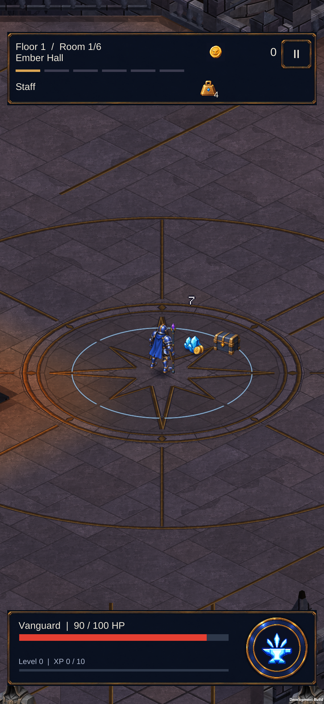

Metal, fırın ve zemin birlikte
Üç ajanın birleşik paketi: mevcut metal dokusunu daha geniş örnekleme, fırın ağzında taşın gölgesini belirginleştirme ve pirinç zemin motiflerini matlaştırma. Harita ve oynanış aynı.
Zemindeki pirinç işlemenin okunurluğu
Atölyede metal yüzeyler

Önce
SonraFırın çukurunda derinlik

Önce
SonraKapı yaklaşımı
Haritanın bütünü
 Önce
Önce
SonraGerçek Unity görüntüleri; inceleme konumları sahnelendi. Kaynak dokular yeniden üretilmedi. Artış yalnızca 84 köşe; 18 statik çizim nesnesi korunuyor. 395 .NET, 415 EditMode ve 150 PlayMode testi geçti. Yeni APK S23’e yüklendi; atölye, fırın ve normal koşu kontrol edildi. Referansın boyalı görsel kalitesi henüz tamamlanmadı. İlk rampa girişinde bir 217 ms takılma görüldü; tekrar geçişinde en yüksek 33,4 ms ölçüldü. İlk kullanım sorununun nedeni hâlâ araştırılmalı.
Tam harita · Kapsam ve doğrulama
Gerçek S23 görüntüleri

Atölye stokları — gerçek cihaz
Fırın kenarı — gerçek cihaz
Normal koşuda karakter ve ödül ayrımı